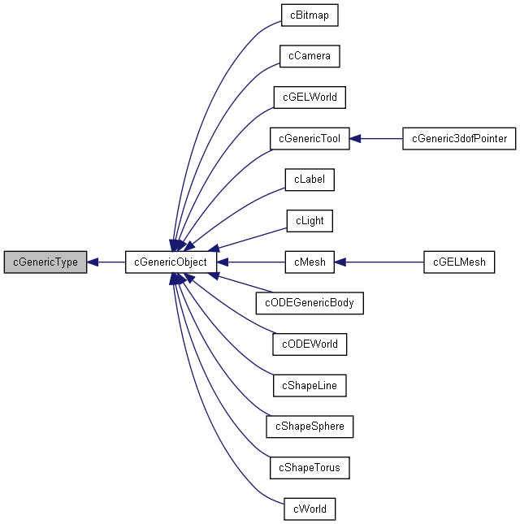

Main Page
Modules
Classes
Files
Class List
Class Hierarchy
Class Members
cGenericType Class Reference
[
Extras
]
Definition of an abstract type.
More...
#include <
CGenericType.h
>
Inheritance diagram for cGenericType:

[
legend
]
List of all members.
Public Member Functions
cGenericType
()
Constructor of
cGenericType
.
virtual
~cGenericType
()
Destructor of
cGenericType
.
Detailed Description
Definition of an abstract type.
The documentation for this class was generated from the following file:
D:/CHAI3D/build-2-0-0/2.0.0/win32/src/extras/
CGenericType.h
CHAI3D 2.0.0 documentation
Please address any questions to
support@chai3d.org
(C) 2003-2009 -
CHAI 3D
All Rights Reserved.